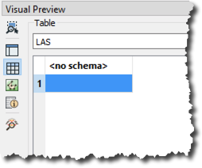

After completing this unit, you’ll be able to:
Sven's colleague Amar is starting an FME project converting 2D building footprints to 3D models to compare them with a point cloud. He has authored a workspace that takes 2D building footprints and extrudes them to make 3D buildings. He also wants to compare the resulting extruded 3D buildings to a point cloud to see if the extrusion is roughly correct compared to what is observed in the point cloud.
Amar has not yet inspected the point cloud dataset, and is curious about what units of distance are used in the point cloud data (feet or meters) and what software was used to generate the point cloud—TopoDOT had been used previously but Terrascan was used for the most recent point clouds.
The point cloud format is ASPRS Lidar Data Exchange Format (LAS). The reader is listed in the Navigator window as [LAS]. Amar right-clicks on the LAS reader and selects View Source Data… to inspect the original dataset.

The Table view in Visual Preview shows no user-defined attributes. This indicates that there are no user-defined attributes in the dataset, but that does not mean there are no attributes at all. The features will have format attributes but format attributes are not displayed in the Table view by default.

A quick check of the ASPRS LiDAR Data Exchange Format (LAS) "Quick Facts" in the documentation confirms that this format does not support user-defined attributes. But, Amar knows that there are more attributes than just user-defined attributes. Amar selects the single feature in the table view and opens the Feature Information window.
The Feature Information window displays everything that FME knows about the feature selected in the Table or Graphics View. Here you can find all the user-defined attributes, format attributes, coordinate system information, and geometry information.

Amar checks the upper part of Feature Information, above Attributes, where he finds:
The coordinate system catches Amar's eye because it’s a link. Clicking on UTM83-10 opens the Properties dialog for the coordinate system. Here, Amar can see that the units for UTM83-10 are meters. This is important for Amar to know especially if he plans to do any calculations such as measuring a distance or an area. By default, FME will use the coordinate system’s unit as measurement, and the result would sure look odd if those units were in degrees!

Amar closes the Coordinate System Properties dialog and then checks the items under the Attributes header in the Feature Information window. This section reports the attributes associated with the feature, including user attributes and format attributes (for example fme_type).
Here, Amar can see that this dataset was generated by TerraScan, not TeraDOT, so this is the more recent point cloud dataset. Amar can also see the creation data of this LAS file (las_file_creation_date (string): 20130425), the LAS version (las_version (string): 1.2), and the location of the dataset (fme_dataset (string): https://s3.amazonaws.com/FMEData/FMEData2020/Data/PointClouds/CoV_4910E_54580N.laz).
Amar then checks the Geometry section in the lower part of the Feature Information window. This section reports the geometry of the feature. It includes the geometry type and a list of the coordinates that make up the feature. Here Amar can see the extents of the data, and the number of points in the point cloud.

While the Table view typically only shows exposed user-defined attributes, the Feature Information window also displays FME generated format attributes and list attributes. Any user defined attributes or fme_type attributes visible in Feature Information can also be exposed for display in the table, allowing Amar to use them in his workspace.
Make sure you have followed along with Amar’s steps.